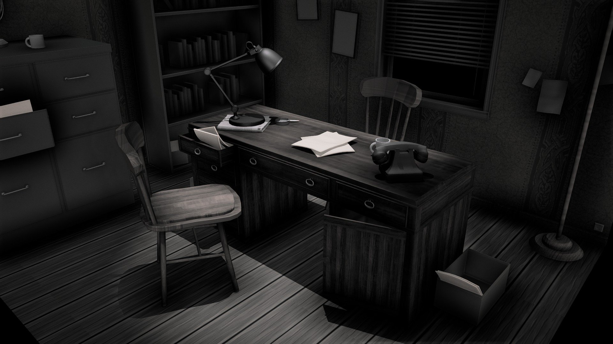

After three years of an investigative drought, you are pleased to accept Emma's offer and choose to help her with her treasure hunt. You ask to see the letter.
"My dear Emma,
If you are reading this, it means that I have passed on and that the treasure I have spent my whole life searching for will now be passed on to you.
I have spent my entire life searching for the Williams family treasure. All the stories are true, it really does exist. I have finally found the key to unlocking its whereabouts, and I have mapped out the first four locations that you must visit in order to start your investigation.
The first location is in Russia, where the frozen tundra holds a secret. The second location is in Qatar, where the desert sands hold a key. The third location is in Brazil, where the dense rainforest holds a clue. And the fourth location is in Atlanta in America, where the city's skyline holds the final piece of the puzzle.
You must act quickly, my dear, as the treasure is well guarded and many others will also be searching for it. But I have faith in you, and I know that you have the intelligence and determination to succeed where I have failed.
Good luck on your journey, Emma. I hope that the treasure brings you the happiness and adventure that it has brought me."
Attached to the letter is a small map with 4 marked locations.
"This treasure is well known as an urban legend, with hunters looking around the world for any leads", you tell her. "But with the four starting points confirmed by your grandfather, we're bound to make progress on the hunt. Let's head to the airport"!
Go to the airport.
